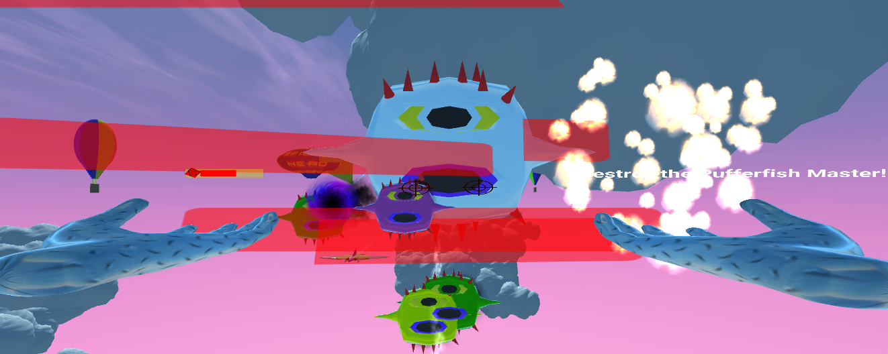
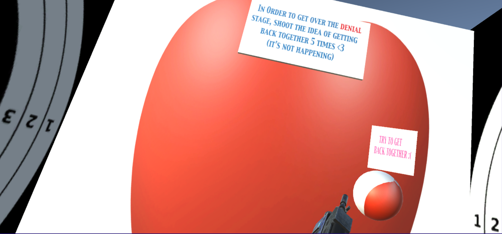

Back to top
PlatformMeta Quest 2 |
Playersup to 8 |
GenresAdventure |
Age Rating13+ |
ContextBuild Track Competition |
May-June 2022. Builder track competition. Theme was Adventure. 3 games in 1. A) Collect start tickets to unlock mystery boxes to learn tech history. B) Walk around to see how many names you recognize. C)Figure out which game the shape of this maze is based on
ScreenShots
 |
 |
| Space and time history | Windmill history |
 |
 |
| Time history | Homebase |
Process
From past game jams experience, getting the game to work was not enough, I had to make it look good as well. However, with no experience in building horizon world, I had to learn the code basics first and whitebox. I knew I wanted to do tech history, but how do I execute it? I first started off just making "mystery boxes" and when I collide with it, it will open up and show a piece of tech history. I then started adding "stars" which acts as tickets to open the box. The problem was the user had no idea what they were collecting, so I made a ticket board where the user can view what tickets they have. At the time my world was just mystery boxes and stars. That was boring, so I decided to use a maze, but not just any maze- a pacman shaped maze! And if anyone recognize the shape of the maze, I encouraged them to take a picture and share what they think the maze shape is based on. I was running out of time at the end and making mystery boxes was getting hard, so I started placing objects around the world that showed tech history with the name of the person on it. This allowed users to not only look for star tickets but just casually walk around the world and challenge themselves to see how many names they recognize. I hope to add more mystery boxes when the judging period is over.
Back to top
PlatformWebGL |
PlayersAnyone |
GenresCasual |
Age RatingAll Ages |
ContextGamejam |
Oct 2021. Unity 2021 Lego Ninjago One Button Game Challenge. Don't let the ball drop and try to beat your own highscore of the day! Master wu will be encouraging you along the way. Your ninja companions are watching you from above
ScreenShots


Process
I first had to think of a game that I would thoroughly enjoy making using "one button" I remember loving the retro game silver ball so I wanted to make same similar where I prevent a ball from falling down. I had a lot of trouble making sure the ball stays with in the boundary and at the same time making the game look fun with different ways to collect points. From the images you can see there are Master Wu, cannon to spice up the game!
Back to top
PlatformAndroid |
Players1 player |
GenresEducation |
Age RatingAll Ages |
ContextXR 30 Day Challenge - Circuit Stream |
March 2021. I particpated in XR 30 day challenge held by Circuit stream. Topic: "Using AR, create an interaction with an everyday object."
When I transit to school or work everyday before pandemic hit, I always bring a book with me. So I made an AR project using Vuforia to make a Kobe Bryant book come alive!
ScreenShots


Process
(1) I started off prototyping to make sure that the database images from Vuforia would be detected by making a 3D object appear such as a cube or sphere
(2)Once I was sure all images will be detected I tried to make sure a single 2D sprite image can appear. Then I tried adding more sprites to see if detecing an image can make multiple images appear-spoiler alert: it did!
(3) Then I attempted to use animations to make a "slide show", but that failed miserably. So I decdied to use code instead. I created a Sprite array and use coroutines to change sprites every x amount of seconds specified in the inspector.
(4) Once the images appeared, I tried to make any audio play sound when an image is detected.
(5) Then once I know audio works I started looking for audios on Youtube (then used Youtube to mp3 converter and then mp3 cutter)
(6) I noticed that when an image stops getting detected and using audioSource.Stop(), the audio stop abruptly, sounding weird. So I decided to fade the audio out using a AudioMixer.
(7) Then I started adding extra affects such as making images rotate and particle affects. Since each image detected may have different amount of sprites, or the time it takes to change sprites are different, I made sure to make those values public so I can edit the seconds/numbers in the inspector.
Thank you to Circuit Stream! The reason why I got into XR
Tools/References
(1)Unity 2019.4.10f1
(2)Vuforia
(3)YouTube.com for audio
(4)Google.com for images
(5)https://ytmp3.cc/youtube-to-mp3/
(6)https://mp3cut.net/
(7)https://www.remove.bg/
(8)https://gamedevbeginner.com/how-to-fade-audio-in-unity-i-tested-every-method-this-ones-the-best/
Back to top
PlatformOculus GO |
PlayersAnyone |
GenresPuzzle |
Age RatingAll Ages |
ContextGamejam |
Jan 2019. Global Game Jam 2019. Theme is "What home means to you". In a team of 7 (5 developers and 2 modelers) we came up with helping grandma (Babushka) by going to the past and fix the broken memories, because home means a collection of memories.
ScreenShots
| Child object when selected | Highlight objects when selected by raycast |
 |
 |
| Unfinished ceiling and grandma | Windows were not added yet, still testing code |
Process
My role as the developer was in charge of setting up a vr environment, upload the build the oculus, generate keystores and make raycast select objects and what happens to them when selected. At first I attended the gamejam with only 1 other member (a former co-worker). We were lucky to have met 5 other developers and artist. We had so much fun together that we decided to meet up after the game jam to fix on some bugs that we did not get to resolve during the game jam.
Back to top
PlatformOculus GO |
Players1 player |
GenresCasual |
Age RatingAll Ages |
ContextUnity Global Student Challenge |
Dec 2018-Jan 2019. I particpated in the Unity Global Student Challenge 2019. Projects must revolve
around the theme of "Teach people something new." I decided to teach people about nocturnal animals, because at night when we are asleep
we do not see enough what is happening at night so we may not appreciate what is happening out there. From this game, you will get to
learn the foods that some of the nocturnal animals eat and some of there superpowers! All the assets I used are described in the Unity Global Student Challenge submission page
Thank you to Oculus Start for providing an Oculus GO for me!
This game has cinemachine and timeline implemented at the beginning of the game. I combined this feature with the properties of a minimap
ScreenShots
 |
 |
| The initial setup of a bat power | Initial Setup of a Raccon Power |
 |
 |
| Initial Test scene of picking an animal | Setting up start up scene for cinemachine and timeline |
Back to top
PlatformOculus Rift |
Players1 player |
GenresAction |
Age Rating10+ |
ContextPersonal Project/Vr Class-C# |
Sept 2017-Dec 2018. Made In Unity: You are a superhero with web powers. You must battle your way through by collecting weapons, deflecting pumpkin bombs and destroying PufferFish Robots!
There are currently 3 levels for the user to play!
Level1: The weapons got stolen by the enemies. You must collect them by swinging the boxes into an airplane!
Level2:An innocent target practice shooting at balloons turns into a showdown between you and MegaGoblin. Destroy the pumpkin bombs before you reach zero health!
Level3:You are 10 000 feet above ground standing on a Spidey plane. PufferFish robots are chasing you. Destroy them before they destroy you!
Thanks to Circuit Stream for providing feedback from September to December 2017, I have learned alot from them!
ScreenShots
 |
|
| Swinging boxes | Shooting at pumpkin bombs |
|  | |
| Battling PufferFish Robot master | Winning scene |
Process
Biggest challenge was transferring what I imagined on paper into reality. Since this game was my idea, I was the only person who knew how I want the scene to look like. For each scene I create, I would first draw it on paper, then write a flow chart of how the weapons would work. Then I do a test run with basic shapes and then will either import fbx objects from the asset store or create them from Blender/Maya. The objects made in Blender/Maya are the airplane in the web sling scene and Puffer Fish robot scene, the boxes in the websling scene, the web in the main menu, the Puffer Fish Robots, and the balloons in the shooting scene.
 |
 |
Draft of main menu |
Final copy of main menu |
 |
 |
Draft of the shooting Scene |
Final copy of Shooting Scene |
 |
 |
Draft of Web Sling scene |
Final copy of Web Sling scene |
Back to top
PlatformWindows |
PlayersAnyone |
GenresEducation |
Age RatingAll Ages |
ContextSchool Project- C++/OpenCV |
Jun-Aug 2018. Made in Visual Studios-The purpose of this project is to implement AR into the school system to teach children to recognize shape in a more interactive way.
To make it interactive, the children will show shape(s) in front of a webcam that is playing live video. The program will then identify and label the shape. The AR part comes into play when a 3D overlay is drawn over the shape
ScreenShots
 |
 |
| Labeling Microsoft logo | Labeling Oculus logo in white and black |
 |
 |
| Labeling Spiderman's face | Labeling grayed shapes |
Process
This project was done in a group of 3. My task was to figure out how to label, identify and draw a 3D overlay on the shapes during a live video. I first started with just a still image that has multiple shapes saved as a PNG file. I would convert these images to gray scale and then binarized them using the gaussian filter and Canny threshold. I then tried to connect to the webcam and tried taking a picture and see if the shapes are being recognized. Once the previous steps were completed, I now had to figure out how to make the program recognize shapes LIVE, which means I needed to create a loop for the program to recognize the contours of the shapes each frame. The twist to labeling and drawing a 3D overlay on the shapes during live video is that the overlay must follow the shape. This issue was solved by making the drawing and labeling in the same loop as the contour recognition section.
Just Get Over It
**3rd Place**
Back to top
PlatformOculus Rift |
Players1 player |
GenresAction |
Age RatingAll Ages |
ContextHackathon-C# |
Feb 2018. Made In Unity-The theme of that hackathon is Love. We made a game called "Just Get Over It". If you have ever been in love, you know
there are different stages. We created two stages- Denial and Anger. In the Denial level, you must shoot at incoming love boxes the says "Get Over It" and "Try to get back together". The Anger level lets you hit a box with a heart shape to let your anger out!
I would like to thank the my teammates-"VR Team", Circuit Stream for lending me the Oculus Rift, Simon Fraser Student Society and the Software Systems Student Society for hosting this 12 hours Systems Hack- "Loveathon". We got placed in 3rd out of 17 teams
ScreenShots
 |
|
| Main Menu | Denial Level. Love boxes charging towards you |
|  | |
| Shooting at the love boxes | Anger Level |
Process
My teamates- Karina and Mike- and I called our team the "VR Team". It's not fancy, but it tells you what we do exactly! This is our second time working together. The first time was at the LumoHacks-Lumania. With our experience from the first hackathon, we had an idea on how to split up the task. However, coming up with the idea and trying to execute it was extremely hard due to the time constraint. Luckily, the tasks we split up were according to our strengths and we finished what we imagine into (virtual) reality!
Eldon (That's me!)- Setup Oculus Rift, create base class for interactions with the rift, programmed interactions in the main menu, created the button in the main menu, programmed the Denial Scene for love boxes to be destroyed
Karina- Designer, audio, programmed instantiation of bullets and love boxes, movement of bullets and movement of love boxes and presented the game
Mike- Created interactions in the Anger Scene, animated the hands, demonstrated the game
Back to top
PlatformGoogle Cardboard-Android |
Players1 player |
GenresCasual |
Age RatingAll Ages |
ContextHackathon-C# |
September 2017. Made In Unity: This game was created at a Hackathon called LumoHacks. The topic for my group was
"Mental distress and depression in young people". This game helps people with mental health. Each day for 30 days, the user follows a friend-a gender of the user's choice-who
will lead the user into different doors. Each door leads the user to a new task that boost their confidence. The user will play this game at the same time
everyday to help them get used to a daily routine. Currently we have one task called "The Dancing Challenge" that encourages the
user to dance along with a dancing rabbit! This game was placed top 15 out of 60 teams! Huge thanks to my teamates Karina,Mike and Warren
ScreenShots
 |
|
| Choosing a Friend- by Mike | Friend introduction- by Karina and Warren |
 |
|
| Selecting a daily challenge- by Eldon | Dancing challenge- by Karina and Mike |
Process


{kind=link}
{kind=link}
{kind=link}
{kind=link}
{kind=link}
{kind=link}
{kind=link}
{kind=link}
{kind=link}
{kind=link}
{kind=link}
{kind=link}
{kind=link}